lorenz_partial_additive_splitmode_p30_obsnoise005_top3nd_init15_autodim__lc_sweepProject: Lorenz_INDpartial_NDInitSweep_autodim_D1_NormTrue__JacobianODE
Launched: 2026-04-23T15:40:38Z
Completed: 2026-04-24T06:00:21Z
Outcome: complete_clean
Git: latent-JacobianODE @ ba8843f
Expected runs: 21
lorenz_partial_additive_splitmode_p30_obsnoise005_top3nd_init15_autodim__lc_sweepDescription
Lorenz partial additive coupling, obs_noise=0.05, top-3 n_delays {45, 80, 85}, traj_init_steps=15, prediction_steps=30, splitmode (reconstruction_mode=uniform + trajectory_loss_most_recent=true, both explicit). 21-run sweep over 7 LC weights {0, 1e-6, 1e-5, 1e-4, 1e-3, 1e-2, 1e-1}. n_target_dims auto via PCA (threshold=0.99), final_perm_identity=true, init_pca_basis=false. Submitted to ou_bcs_normal for fast turnaround.
Hypothesis
Reproduce the original top3nd LC sweep cleanly under explicit split mode. Best val traj should match the original sweep's best (~5.5e-3 at LC=1e-4, n_delays=45). At this noise level LC=0 and LC=1e-6 never passed C1+C2+C3 in the original — we keep them in the grid as explicit baselines showing what "no loop closure" looks like at high noise. LC=1 and LC=10 were dropped (best_traj noticeably worse than the optimum).
Success criteria
Swept axes (8): data.train_test_params.delay_embedding_params.n_delays, model.encoder.n_input, model.n_target_dims, model.n_target_dims_pca_auto, model.n_target_dims_pca_cum_var, model.params.input_dim, model.params.output_dim, training.lightning.loop_closure_weight
Chosen run (by best_traj_loss): o3ntglqe — traj_loss=0.00517, MASE=0.7720, R²=0.9864, LC loss=79.487, epoch=103.0
Swept-axis values at chosen run: data.train_test_params.delay_embedding_params.n_delays=85 · model.encoder.n_input=85 · model.n_target_dims=14 · model.n_target_dims_pca_auto=14 · model.n_target_dims_pca_cum_var=0.990074 · model.params.input_dim=14 · model.params.output_dim=196 · training.lightning.loop_closure_weight=0
Runs analyzed: 21 (expected 21)
| run_idx | run_id | data.train_test_params.delay_embedding_params.n_delays |
model.encoder.n_input |
model.n_target_dims |
model.n_target_dims_pca_auto |
model.n_target_dims_pca_cum_var |
model.params.input_dim |
model.params.output_dim |
training.lightning.loop_closure_weight |
best_traj_loss | best_MASE | R² | LC loss | epoch |
|---|---|---|---|---|---|---|---|---|---|---|---|---|---|---|
| 14 | o3ntglqe |
85 | 85 | 14 | 14 | 0.990074 | 14 | 196 | 0 | 0.00517 | 0.7720 | 0.9864 | 79.487 | 103.0 |
| 15 | 6iru8a54 |
85 | 85 | 14 | 14 | 0.990074 | 14 | 196 | 1.0e-06 | 0.00535 | 0.7762 | 0.9859 | 17.810 | 103.0 |
| 1 | 6qmfcfgz |
45 | 45 | 7 | 7 | 0.990085 | 7 | 49 | 1.0e-06 | 0.00550 | 0.7759 | 0.9847 | 2.350 | 112.0 |
| 17 | une3usxv |
85 | 85 | 14 | 14 | 0.990074 | 14 | 196 | 1.0e-04 | 0.00553 | 0.7900 | 0.9855 | 0.654 | 97.0 |
| 2 | 162o9jhn |
45 | 45 | 7 | 7 | 0.990085 | 7 | 49 | 1.0e-05 | 0.00557 | 0.7871 | 0.9845 | 0.966 | 102.0 |
| 4 | mf9iub3g |
45 | 45 | 7 | 7 | 0.990085 | 7 | 49 | 0.001 | 0.00562 | 0.7905 | 0.9844 | 0.052 | 114.0 |
| 16 | sh2ww8vl |
85 | 85 | 14 | 14 | 0.990074 | 14 | 196 | 1.0e-05 | 0.00562 | 0.7824 | 0.9853 | 3.697 | 94.0 |
| 0 | aetnua64 |
45 | 45 | 7 | 7 | 0.990085 | 7 | 49 | 0 | 0.00565 | 0.7879 | 0.9843 | 4.200 | 102.0 |
| 18 | thvxa37g |
85 | 85 | 14 | 14 | 0.990074 | 14 | 196 | 0.001 | 0.00596 | 0.8090 | 0.9844 | 0.090 | 85.0 |
| 8 | vlq2dc6z |
80 | 80 | 13 | 13 | 0.990058 | 13 | 169 | 1.0e-06 | 0.00602 | 0.7905 | 0.9839 | 15.110 | 99.0 |
| 5 | hb1x9ww9 |
45 | 45 | 7 | 7 | 0.990085 | 7 | 49 | 0.01 | 0.00609 | 0.8048 | 0.9829 | 0.007 | 102.0 |
| 9 | duyakwxg |
80 | 80 | 13 | 13 | 0.990058 | 13 | 169 | 1.0e-05 | 0.00618 | 0.7978 | 0.9836 | 3.599 | 112.0 |
| 7 | 4vxtpkv8 |
80 | 80 | 13 | 13 | 0.990058 | 13 | 169 | 0 | 0.00622 | 0.7940 | 0.9835 | 64.934 | 95.0 |
| 10 | rjitbsp3 |
80 | 80 | 13 | 13 | 0.990058 | 13 | 169 | 1.0e-04 | 0.00648 | 0.8077 | 0.9827 | 0.528 | 99.0 |
| 11 | opy2khrt |
80 | 80 | 13 | 13 | 0.990058 | 13 | 169 | 0.001 | 0.00727 | 0.8302 | 0.9805 | 0.098 | 106.0 |
| 3 | kubg9nfz |
45 | 45 | 7 | 7 | 0.990085 | 7 | 49 | 1.0e-04 | 0.00745 | 0.8423 | 0.9791 | 0.243 | 55.0 |
| 20 | 451l25zs |
85 | 85 | 14 | 14 | 0.990074 | 14 | 196 | 0.1 | 0.00754 | 0.8429 | 0.9802 | 0.001 | 103.0 |
| 6 | t7o9xise |
45 | 45 | 7 | 7 | 0.990085 | 7 | 49 | 0.1 | 0.00755 | 0.8630 | 0.9790 | 0.001 | 102.0 |
| 19 | rghd28hc |
85 | 85 | 14 | 14 | 0.990074 | 14 | 196 | 0.01 | 0.00782 | 0.8637 | 0.9794 | 0.021 | 95.0 |
| 13 | gjp24vat |
80 | 80 | 13 | 13 | 0.990058 | 13 | 169 | 0.1 | 0.00950 | 0.8823 | 0.9745 | 0.001 | 106.0 |
| 12 | wor1xddq |
80 | 80 | 13 | 13 | 0.990058 | 13 | 169 | 0.01 | 0.01016 | 0.9057 | 0.9725 | 0.008 | 88.0 |
| Criterion | Verdict | Note |
|---|---|---|
| All 21 runs train without divergence | Unknown | |
| Best val traj_loss within 2x of the original sweep's 5.50e-3 winner | Unknown | |
| LC=0 and LC=1e-6 cells fail C2 at all 3 n_delays (reproduces original) | Unknown | |
| Best cell (expected LC ∈ {1e-4, 1e-3}) passes C1+C2+C3 | Unknown |
Automated verdicts use simple numeric-threshold parsing and may mis-classify qualitative criteria. The Discussion section below takes precedence.
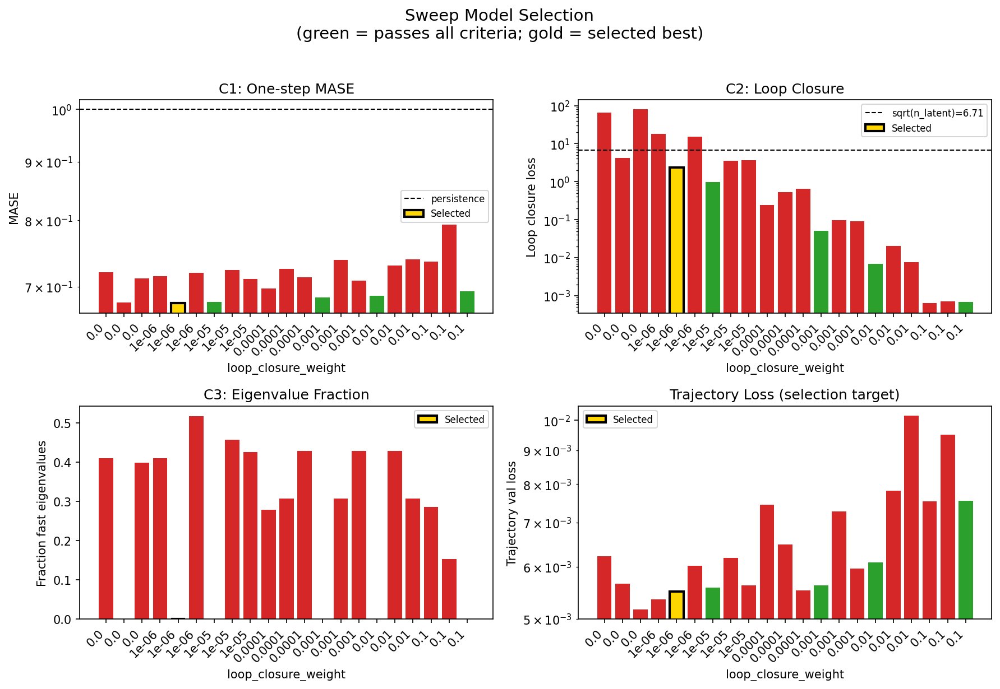
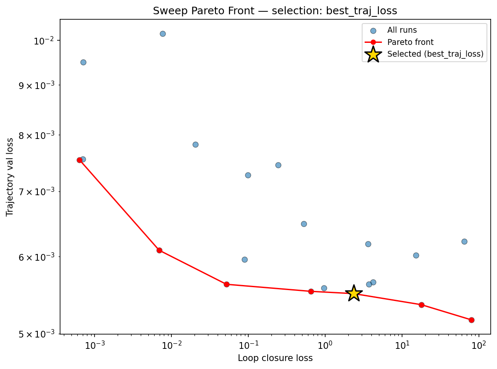
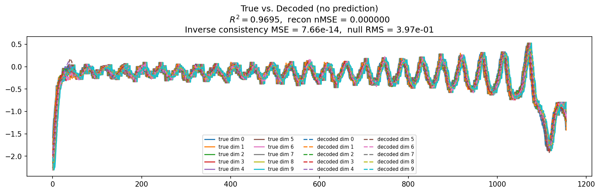
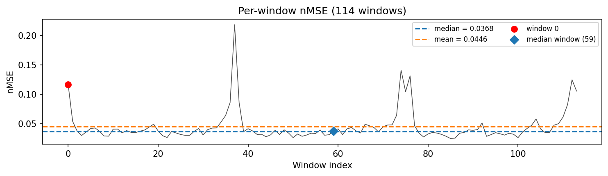
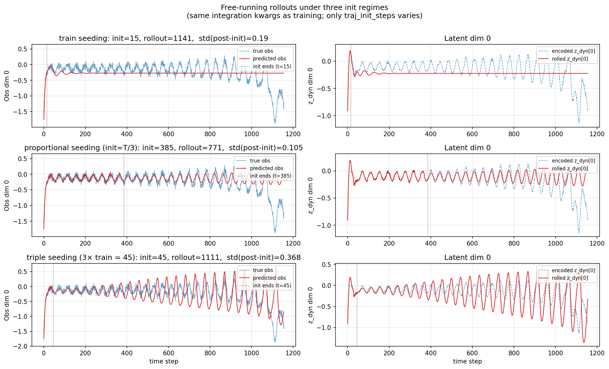
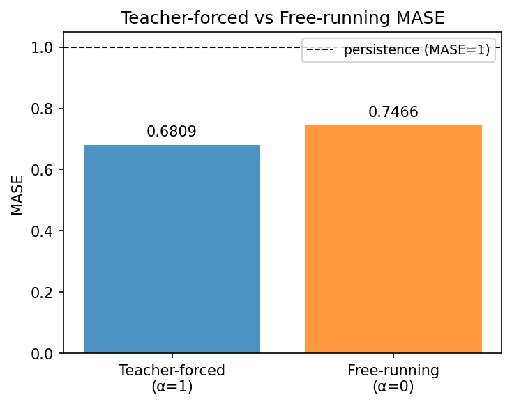
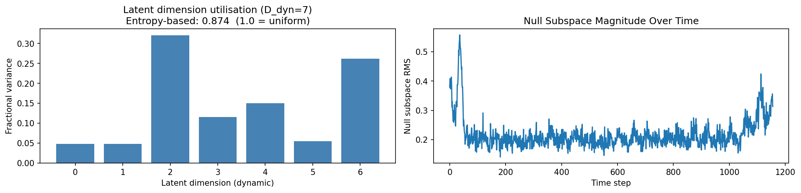
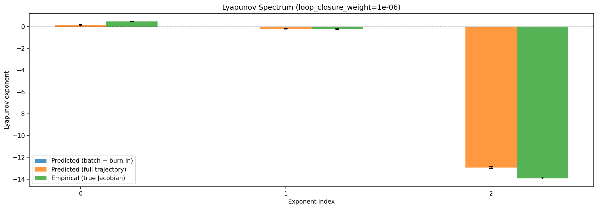
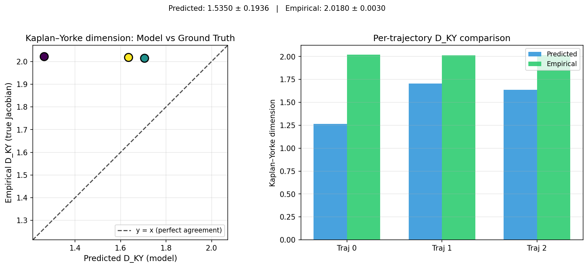
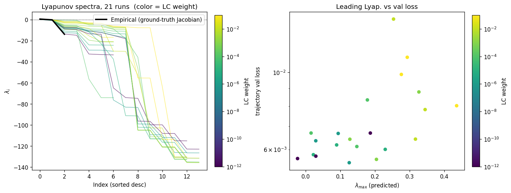
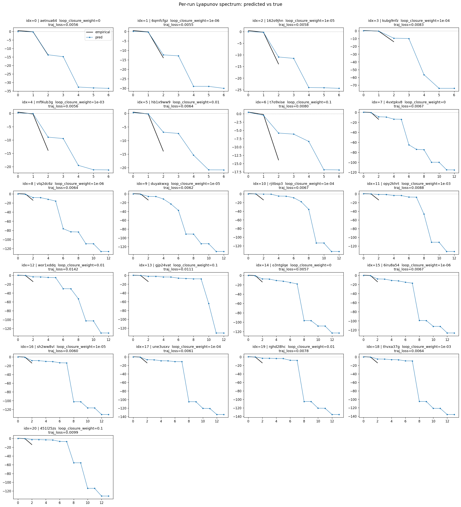
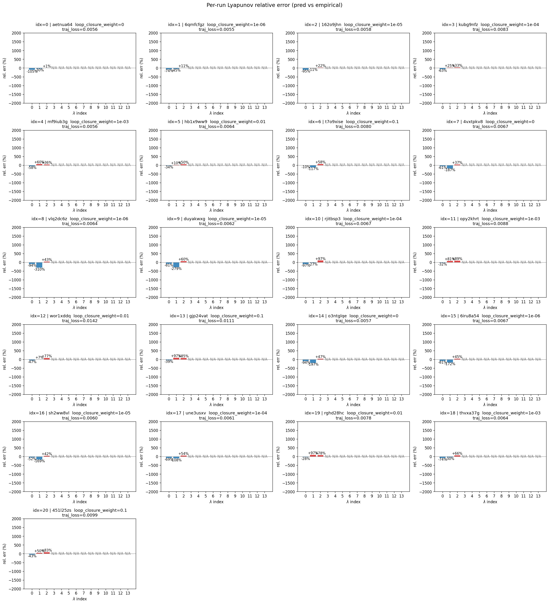
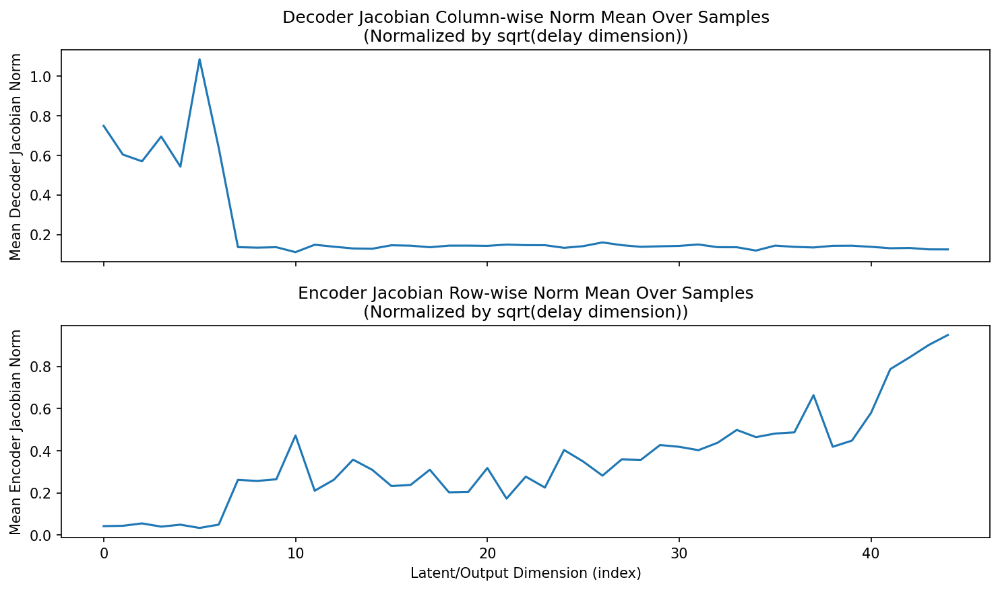
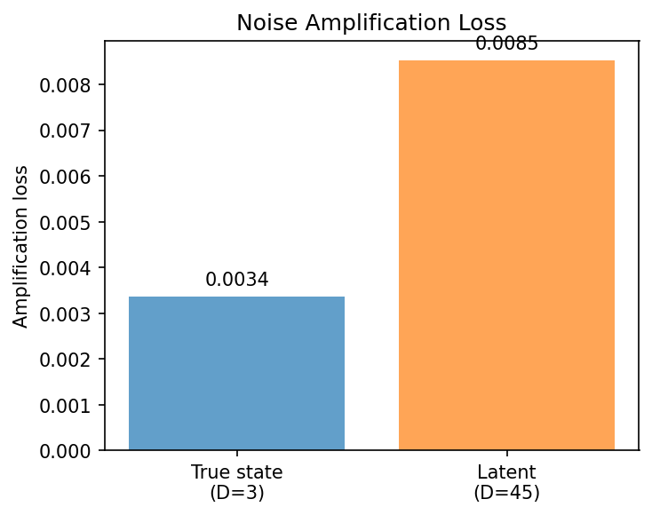
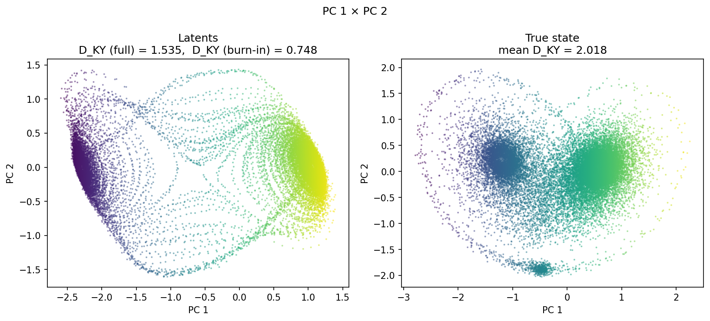
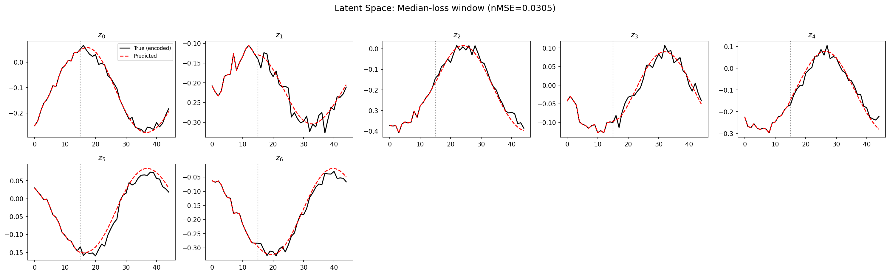
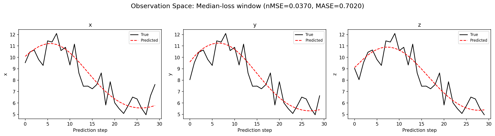
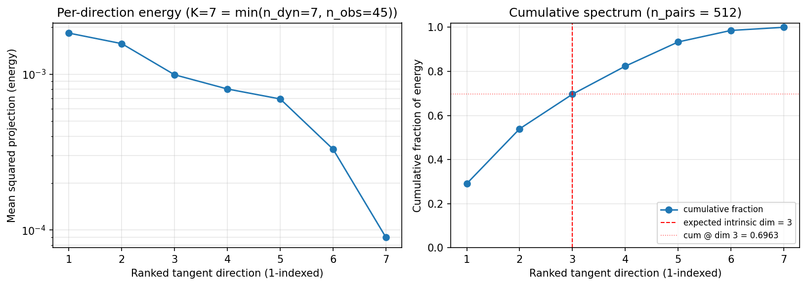
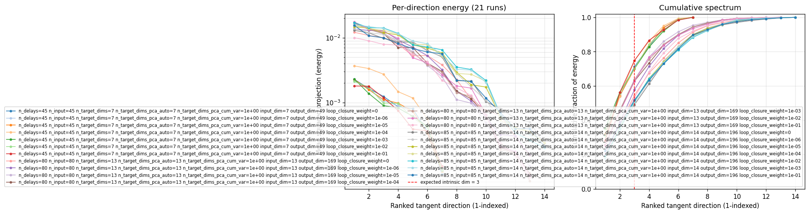
(to be written)
run_analytics stdoutrun_analyticsNo run_id provided — selecting best run from group 'lorenz_partial_additive_splitmode_p30_obsnoise005_top3nd_init15_autodim__lc_sweep' ...
Found 21 total runs in JacobianODE/Lorenz_INDpartial_NDInitSweep_autodim_D1_NormTrue__JacobianODE (group=lorenz_partial_additive_splitmode_p30_obsnoise005_top3nd_init15_autodim__lc_sweep)
All runs (state, loop_closure_weight, tangent_entropy_weight, kl_dyn_weight):
aetnua64: state=finished, lc=0.0, te=0.0, kl_dyn=0.0
6qmfcfgz: state=finished, lc=1e-06, te=0.0, kl_dyn=0.0
162o9jhn: state=finished, lc=1e-05, te=0.0, kl_dyn=0.0
kubg9nfz: state=finished, lc=0.0001, te=0.0, kl_dyn=0.0
mf9iub3g: state=finished, lc=0.001, te=0.0, kl_dyn=0.0
hb1x9ww9: state=finished, lc=0.01, te=0.0, kl_dyn=0.0
t7o9xise: state=finished, lc=0.1, te=0.0, kl_dyn=0.0
4vxtpkv8: state=finished, lc=0.0, te=0.0, kl_dyn=0.0
vlq2dc6z: state=finished, lc=1e-06, te=0.0, kl_dyn=0.0
duyakwxg: state=finished, lc=1e-05, te=0.0, kl_dyn=0.0
rjitbsp3: state=finished, lc=0.0001, te=0.0, kl_dyn=0.0
opy2khrt: state=finished, lc=0.001, te=0.0, kl_dyn=0.0
wor1xddq: state=finished, lc=0.01, te=0.0, kl_dyn=0.0
gjp24vat: state=finished, lc=0.1, te=0.0, kl_dyn=0.0
o3ntglqe: state=finished, lc=0.0, te=0.0, kl_dyn=0.0
6iru8a54: state=finished, lc=1e-06, te=0.0, kl_dyn=0.0
sh2ww8vl: state=finished, lc=1e-05, te=0.0, kl_dyn=0.0
une3usxv: state=finished, lc=0.0001, te=0.0, kl_dyn=0.0
rghd28hc: state=finished, lc=0.01, te=0.0, kl_dyn=0.0
thvxa37g: state=finished, lc=0.001, te=0.0, kl_dyn=0.0
451l25zs: state=finished, lc=0.1, te=0.0, kl_dyn=0.0
slurm_timeout_min not found in any run config — falling back to 180 min
Including aetnua64 (lc=0.0): use_all_runs=True (state=finished)
Including 6qmfcfgz (lc=1e-06): use_all_runs=True (state=finished)
Including 162o9jhn (lc=1e-05): use_all_runs=True (state=finished)
Including kubg9nfz (lc=0.0001): use_all_runs=True (state=finished)
Including mf9iub3g (lc=0.001): use_all_runs=True (state=finished)
Including hb1x9ww9 (lc=0.01): use_all_runs=True (state=finished)
Including t7o9xise (lc=0.1): use_all_runs=True (state=finished)
Including 4vxtpkv8 (lc=0.0): use_all_runs=True (state=finished)
Including vlq2dc6z (lc=1e-06): use_all_runs=True (state=finished)
Including duyakwxg (lc=1e-05): use_all_runs=True (state=finished)
Including rjitbsp3 (lc=0.0001): use_all_runs=True (state=finished)
Including opy2khrt (lc=0.001): use_all_runs=True (state=finished)
Including wor1xddq (lc=0.01): use_all_runs=True (state=finished)
Including gjp24vat (lc=0.1): use_all_runs=True (state=finished)
Including o3ntglqe (lc=0.0): use_all_runs=True (state=finished)
Including 6iru8a54 (lc=1e-06): use_all_runs=True (state=finished)
Including sh2ww8vl (lc=1e-05): use_all_runs=True (state=finished)
Including une3usxv (lc=0.0001): use_all_runs=True (state=finished)
Including rghd28hc (lc=0.01): use_all_runs=True (state=finished)
Including thvxa37g (lc=0.001): use_all_runs=True (state=finished)
Including 451l25zs (lc=0.1): use_all_runs=True (state=finished)
Found 21 effectively-done sweep runs:
loop_closure_weight=0.0, tangent_entropy_weight=0.0, kl_dyn_weight=0.0 -> run_id=4vxtpkv8
loop_closure_weight=0.0, tangent_entropy_weight=0.0, kl_dyn_weight=0.0 -> run_id=aetnua64
loop_closure_weight=0.0, tangent_entropy_weight=0.0, kl_dyn_weight=0.0 -> run_id=o3ntglqe
loop_closure_weight=1e-06, tangent_entropy_weight=0.0, kl_dyn_weight=0.0 -> run_id=6iru8a54
loop_closure_weight=1e-06, tangent_entropy_weight=0.0, kl_dyn_weight=0.0 -> run_id=6qmfcfgz
loop_closure_weight=1e-06, tangent_entropy_weight=0.0, kl_dyn_weight=0.0 -> run_id=vlq2dc6z
loop_closure_weight=1e-05, tangent_entropy_weight=0.0, kl_dyn_weight=0.0 -> run_id=162o9jhn
loop_closure_weight=1e-05, tangent_entropy_weight=0.0, kl_dyn_weight=0.0 -> run_id=duyakwxg
loop_closure_weight=1e-05, tangent_entropy_weight=0.0, kl_dyn_weight=0.0 -> run_id=sh2ww8vl
loop_closure_weight=0.0001, tangent_entropy_weight=0.0, kl_dyn_weight=0.0 -> run_id=kubg9nfz
loop_closure_weight=0.0001, tangent_entropy_weight=0.0, kl_dyn_weight=0.0 -> run_id=rjitbsp3
loop_closure_weight=0.0001, tangent_entropy_weight=0.0, kl_dyn_weight=0.0 -> run_id=une3usxv
loop_closure_weight=0.001, tangent_entropy_weight=0.0, kl_dyn_weight=0.0 -> run_id=mf9iub3g
loop_closure_weight=0.001, tangent_entropy_weight=0.0, kl_dyn_weight=0.0 -> run_id=opy2khrt
loop_closure_weight=0.001, tangent_entropy_weight=0.0, kl_dyn_weight=0.0 -> run_id=thvxa37g
loop_closure_weight=0.01, tangent_entropy_weight=0.0, kl_dyn_weight=0.0 -> run_id=hb1x9ww9
loop_closure_weight=0.01, tangent_entropy_weight=0.0, kl_dyn_weight=0.0 -> run_id=rghd28hc
loop_closure_weight=0.01, tangent_entropy_weight=0.0, kl_dyn_weight=0.0 -> run_id=wor1xddq
loop_closure_weight=0.1, tangent_entropy_weight=0.0, kl_dyn_weight=0.0 -> run_id=451l25zs
loop_closure_weight=0.1, tangent_entropy_weight=0.0, kl_dyn_weight=0.0 -> run_id=gjp24vat
loop_closure_weight=0.1, tangent_entropy_weight=0.0, kl_dyn_weight=0.0 -> run_id=t7o9xise
n_dims=80, n_latent=80, n_dyn=13, dt=0.0150
run=4vxtpkv8: DiagnosticMetrics(one_step_mase=0.720434844493866, loop_closure_loss=64.93416595458984, fast_eigenvalue_fraction=0.4105769097805023, trajectory_val_loss=0.006216591689735651) (from W&B history)
run=aetnua64: DiagnosticMetrics(one_step_mase=0.6776918172836304, loop_closure_loss=4.200197219848633, fast_eigenvalue_fraction=0.0, trajectory_val_loss=0.005649094004184008) (from W&B history)
run=o3ntglqe: DiagnosticMetrics(one_step_mase=0.7117806673049927, loop_closure_loss=79.48748016357422, fast_eigenvalue_fraction=0.39964285492897034, trajectory_val_loss=0.005165980663150549) (from W&B history)
run=6iru8a54: DiagnosticMetrics(one_step_mase=0.7151942849159241, loop_closure_loss=17.810413360595703, fast_eigenvalue_fraction=0.4107142984867096, trajectory_val_loss=0.00535417627543211) (from W&B history)
run=6qmfcfgz: DiagnosticMetrics(one_step_mase=0.6769357919692993, loop_closure_loss=2.3496384620666504, fast_eigenvalue_fraction=0.0, trajectory_val_loss=0.005495918449014425) (from W&B history)
run=vlq2dc6z: DiagnosticMetrics(one_step_mase=0.7196230292320251, loop_closure_loss=15.110177993774414, fast_eigenvalue_fraction=0.5178846120834351, trajectory_val_loss=0.006015999708324671) (from W&B history)
run=162o9jhn: DiagnosticMetrics(one_step_mase=0.6786338090896606, loop_closure_loss=0.9662990570068359, fast_eigenvalue_fraction=0.0, trajectory_val_loss=0.005572308786213398) (from W&B history)
run=duyakwxg: DiagnosticMetrics(one_step_mase=0.7236517667770386, loop_closure_loss=3.5993785858154297, fast_eigenvalue_fraction=0.45730769634246826, trajectory_val_loss=0.006183509714901447) (from W&B history)
run=sh2ww8vl: DiagnosticMetrics(one_step_mase=0.7106341123580933, loop_closure_loss=3.697136878967285, fast_eigenvalue_fraction=0.426071435213089, trajectory_val_loss=0.00561951519921422) (from W&B history)
run=kubg9nfz: DiagnosticMetrics(one_step_mase=0.6976839303970337, loop_closure_loss=0.24313640594482422, fast_eigenvalue_fraction=0.279285728931427, trajectory_val_loss=0.007446702569723129) (from W&B history)
run=rjitbsp3: DiagnosticMetrics(one_step_mase=0.7251628637313843, loop_closure_loss=0.5279591083526611, fast_eigenvalue_fraction=0.3076923191547394, trajectory_val_loss=0.006482718512415886) (from W&B history)
run=une3usxv: DiagnosticMetrics(one_step_mase=0.7130308151245117, loop_closure_loss=0.6536874175071716, fast_eigenvalue_fraction=0.4285714328289032, trajectory_val_loss=0.005525527521967888) (from W&B history)
run=mf9iub3g: DiagnosticMetrics(one_step_mase=0.6850469708442688, loop_closure_loss=0.051991406828165054, fast_eigenvalue_fraction=0.0, trajectory_val_loss=0.005618350580334663) (from W&B history)
run=opy2khrt: DiagnosticMetrics(one_step_mase=0.7389737963676453, loop_closure_loss=0.09823773056268692, fast_eigenvalue_fraction=0.3076923191547394, trajectory_val_loss=0.00727051543071866) (from W&B history)
run=thvxa37g: DiagnosticMetrics(one_step_mase=0.708062469959259, loop_closure_loss=0.08982289582490921, fast_eigenvalue_fraction=0.4285714328289032, trajectory_val_loss=0.0059610940515995026) (from W&B history)
run=hb1x9ww9: DiagnosticMetrics(one_step_mase=0.6874358654022217, loop_closure_loss=0.00692901574075222, fast_eigenvalue_fraction=0.0, trajectory_val_loss=0.006088986527174711) (from W&B history)
run=rghd28hc: DiagnosticMetrics(one_step_mase=0.7300407886505127, loop_closure_loss=0.02057151310145855, fast_eigenvalue_fraction=0.4285714328289032, trajectory_val_loss=0.007816847413778305) (from W&B history)
run=wor1xddq: DiagnosticMetrics(one_step_mase=0.7390971779823303, loop_closure_loss=0.0076867518946528435, fast_eigenvalue_fraction=0.3076923191547394, trajectory_val_loss=0.010159263387322426) (from W&B history)
run=451l25zs: DiagnosticMetrics(one_step_mase=0.7363907694816589, loop_closure_loss=0.0006363973952829838, fast_eigenvalue_fraction=0.2857142984867096, trajectory_val_loss=0.00754039641469717) (from W&B history)
run=gjp24vat: DiagnosticMetrics(one_step_mase=0.7928690314292908, loop_closure_loss=0.0007145681302063167, fast_eigenvalue_fraction=0.1538461595773697, trajectory_val_loss=0.009499672800302505) (from W&B history)
run=t7o9xise: DiagnosticMetrics(one_step_mase=0.6932587623596191, loop_closure_loss=0.0007011864217929542, fast_eigenvalue_fraction=0.0, trajectory_val_loss=0.007549745962023735) (from W&B history)
Ranking method: best_traj_loss
Best run ID: 6qmfcfgz
Best loop_closure_weight: 1e-06
Best tangent_entropy_weight: 0.0
Best kl_dyn_weight: 0.0
Best traj loss: 0.005496
Criteria applied: ['C1', 'C2', 'C3']
Surviving: 5 / 21
Auto-selected run_id: 6qmfcfgz
======================================================================
PARETO FRONTIER RUNS (7 runs)
======================================================================
Run ID LC Loss Traj Val Loss
------------ -------------- --------------
451l25zs 0.000636 0.007540
hb1x9ww9 0.006929 0.006089
mf9iub3g 0.051991 0.005618
une3usxv 0.653687 0.005526
6qmfcfgz 2.349638 0.005496 <-- selected
6iru8a54 17.810413 0.005354
o3ntglqe 79.487480 0.005166
======================================================================
RANKING METHOD COMPARISON (over 5 survivors)
======================================================================
Method Run ID LC Loss Traj Val Loss
---------------------- ------------ -------------- --------------
best_traj_loss 6qmfcfgz 2.349638 0.005496 <-- active
pareto_knee mf9iub3g 0.051991 0.005618
geo_rank 6qmfcfgz 2.349638 0.005496
minimax_rank mf9iub3g 0.051991 0.005618
geo_log_score 6qmfcfgz 2.349638 0.005496
minimax_log_score hb1x9ww9 0.006929 0.006089
======================================================================
Loading run 6qmfcfgz from JacobianODE/Lorenz_INDpartial_NDInitSweep_autodim_D1_NormTrue__JacobianODE ...
Loading checkpoint epoch=112-step=22600.ckpt...
Train dataset shape: torch.Size([24442, 45, 45])
Validation dataset shape: torch.Size([7777, 45, 45])
Test dataset shape: torch.Size([3333, 45, 45])
Train trajectories dataset shape: torch.Size([22, 1156, 45])
Validation trajectories dataset shape: torch.Size([7, 1156, 45])
Test trajectories dataset shape: torch.Size([3, 1156, 45])
Loading checkpoint epoch=112-step=22600.ckpt...
Computing reconstruction ...
Computing MASE ...
Teacher-forced MASE: 0.6809
Free-running MASE: 0.7466
Computing latent utilization ...
Entropy-based utilization: 0.874
Null subspace mean RMS: 2.223971e-01
Computing Lyapunov exponents ...
Computing full-trajectory Lyapunov (3 test trajs, T=1156) ...
Predicted Lyapunov exponents (batch+burn-in, 128 windowed trajs):
λ_1 = +nan ± nan
λ_2 = +nan ± nan
λ_3 = +nan ± nan
λ_4 = +nan ± nan
λ_5 = +nan ± nan
λ_6 = +nan ± nan
λ_7 = +nan ± nan
Predicted Lyapunov exponents (full-length, 3 test trajs):
λ_1 = +0.1180 ± 0.0552
λ_2 = -0.2212 ± 0.0237
λ_3 = -12.9249 ± 0.0858
λ_4 = -13.2560 ± 0.1221
λ_5 = -29.6512 ± 0.1078
λ_6 = -29.6694 ± 0.1035
λ_7 = -30.7473 ± 0.1083
Empirical Lyapunov exponents (mean ± std):
λ_1 = +0.4677 ± 0.0259
λ_2 = -0.2173 ± 0.0549
λ_3 = -13.9174 ± 0.0513
Mean KY dim (predicted): 1.535 ± 0.194
Mean KY dim (empirical): 2.018 ± 0.003
Mean KY dim (burn-in): 0.748 ± 0.613
Computing prediction windows ...
Windows: 114 — nMSE min=0.0246, median=0.0368, mean=0.0446, max=0.2183
Computing long-trajectory free-running rollouts ...
Computing encoder/decoder Jacobians ...
encoder_jacobian: (128, 45, 45)
decoder_jacobian: (128, 45, 45)
Computing amplification loss ...
Amplification loss — True state: 0.003366
Amplification loss — Latent: 0.008533
Computing tangent space spectrum ...